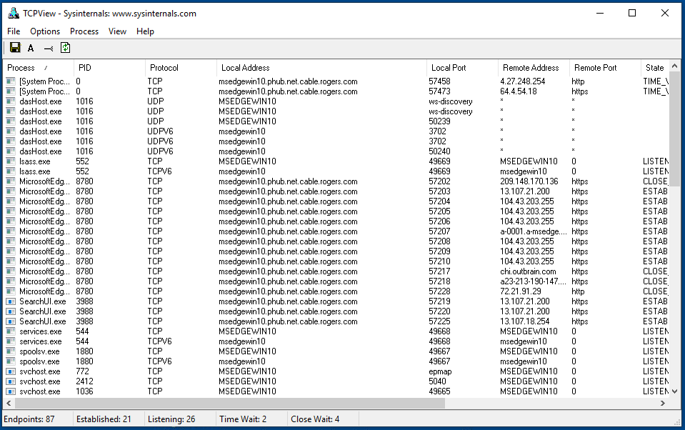
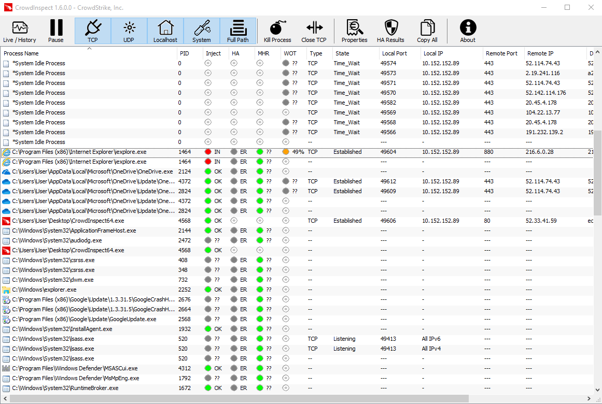
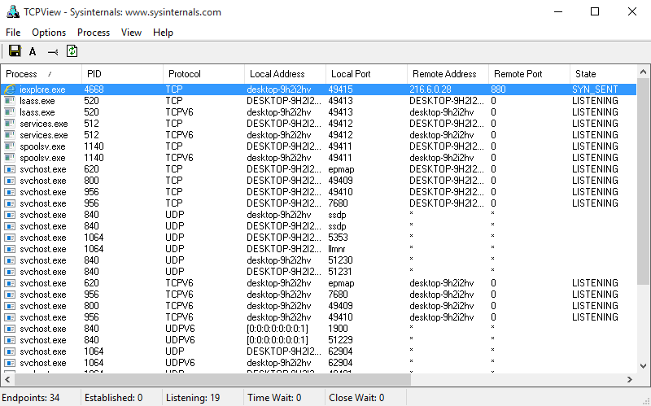

Review Network Connections
Spyware will eventually need to transmit the collected data (such as screenshots, passwords, keystrokes, etc.) to a remote location, the Command & Control server. While it is not possible to be able to predict when such transmission will occur, it is possible that some spyware will establish a permanent connection with the server, or that it will connect frequently enough for you to catch it.
In order to do check for ongoing connections you can, for example, record the whole network traffic using Wireshark and later inspect the stored results. However, a more interesting approach is to use tools that not only monitor the network activity, but that can also tie them to running processes. Generally, you should look for unusual processes connecting to suspicious IP addresses.
One popular tool to do this is TCPView, also from the Sysinternals Suite by Microsoft.

The tool is pretty straightforward: it lists all established network connections and provide information on the originating process, and the destination. You will likely be surprised to observe the amount of network connections active even with seemingly idle systems. Most often you will see network activity from background processes for example for Microsoft services, Google Chrome, Adobe Reader, Skype, etc.
Another tool we can use to observe active network connections is CrowdInspect, which we showcased in the previous section on reviewing running processes. The information provided by CrowdInspect is very similar to that provided by TCPView.

For example, in the screenshot above we can see a running iexplore.exe process that not only has been flagged as injected, but seems to be actively attempting to connect to the Remote IP 216.6.0.28. Because there is no visible Internet Explorer running on the system it is definitely suspicious to see active network connections from it. TCPView would appear like following on the same infected system:

(Note: these tools show display attempted connections to remote locations even if the computer is at the moment disconnected from the Internet).
When you are suspicious of an active connection, you can (preferably from a separate computer) look up the IP address and try to determine who it belongs to and whether it is known to be good or bad, using for instance online tools like Central Ops or ipinfo. For example, a simple WHOIS lookup for that IP address would return:
NetRange: 216.6.0.0 - 216.6.1.255
CIDR: 216.6.0.0/23
NetName: SYRIAN-5
NetHandle: NET-216-6-0-0-2
Parent: TATAC-ARIN-9 (NET-216-6-0-0-1)
NetType: Reassigned
OriginAS:
Organization: STE (Syrian Telecommunications Establishment) (SSTE)
RegDate: 2005-07-21
Updated: 2005-07-21
Comment: Fax-no-963 11 3739765
Ref: https://rdap.arin.net/registry/ip/216.6.0.0
OrgName: STE (Syrian Telecommunications Establishment)
OrgId: SSTE
Address: Fayz Mansour St
Address: STE Building
City: Damascus
StateProv:
PostalCode:
Country: SY
RegDate: 2005-07-21
Updated: 2011-09-24
Ref: https://rdap.arin.net/registry/entity/SSTE
This suggests that the injected iexplore.exe was very suspiciously attempting to connect to an IP address located in Syria. Indeed, for the purpose of demonstration, we used an old copy of DarkComet RAT that was found used in Syria around 2011.
Even a simple search of the IP address over your preferred search engine might reveal useful information. Additionally, you might want to consider using threat research services such as RiskIQ or ThreatMiner to see if they have any information on the IP addresses or domain names you come across.